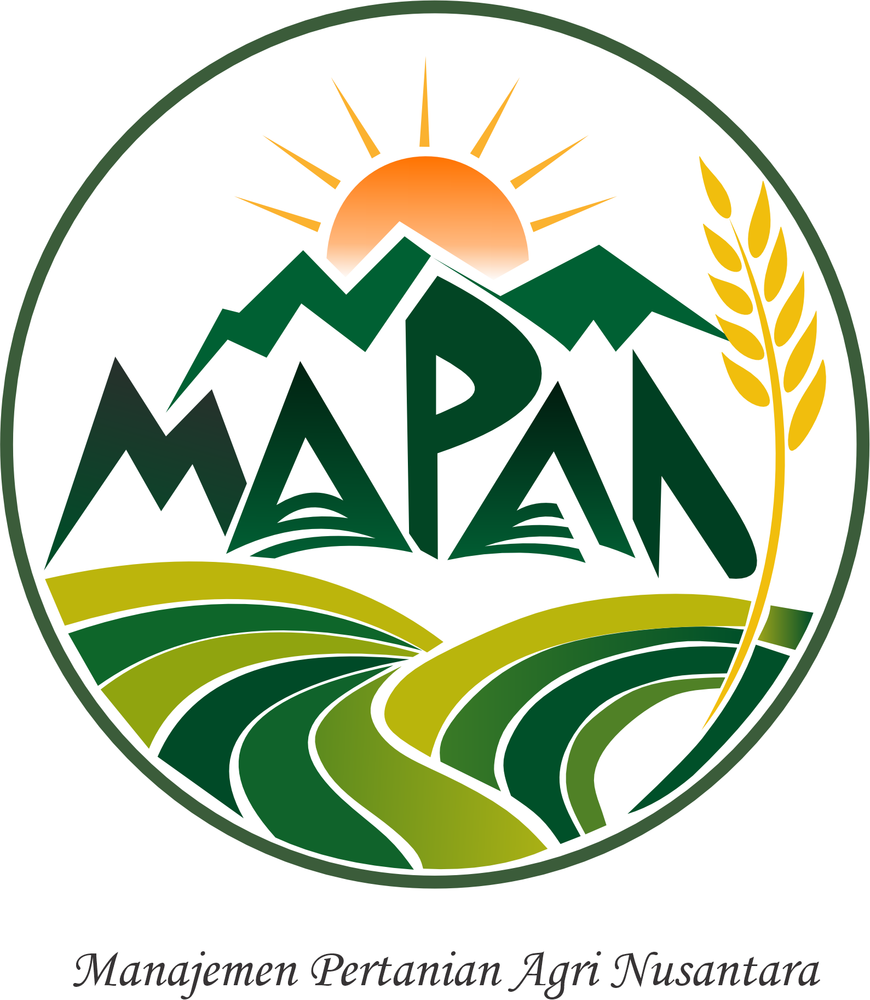

Pertanian kecil di Indonesia masih kerap dicatat secara manual: lahan, siklus tanam, aktivitas harian, dan hasil panen tersebar di buku catatan atau percakapan. MAPAN (Manajemen & Analisis Prediksi Agri Nusantara) diberi rancangan proposal sebagai platform digital yang membantu petani, kelompok tani, penyuluh, dan koperasi mengelola informasi itu dalam satu ruang kerja.
| Tahap | Yang dilakukan | Output |
|---|---|---|
| Rancangan | Proposal, rencana v1, desain basis data (ERD, kamus data, normalisasi 1NF–3NF) | docs/plans/aplikasi-mapan-v1.md, docs/database/ |
| Prototype | Frontend (landing, auth, dashboard) + skema database awal | Source code (proto) |
| Revisi besar | Pendaftaran mandiri, CRUD penuh, hak akses 4 peran, undangan, media | Migrasi 001–008, 10 jalur route API |
| Tahap akhir | Penyempurnaan fitur, pengamanan, otomatisasi pengujian, dokumentasi laporan | server/test/api.test.js (31 skenario), smoke render 33 halaman, laporan ini |
Pengembangan tahap akhir memakai pendekatan vibe coding: mahasiswa memandu perangkat lunak dengan AI coding tool melalui arah permintaan (prompt dokumen, daftar revisi, definisi selesai), sedangkan kode ditulis/direvisi bersama AI. Karena hasil AI tidak boleh dipercaya buta, setiap keluaran diverifikasi manusia melewati jalur yang sulit dipalsu.
| Peran | Tool | Keterangan |
|---|---|---|
| AI coding assistant | [ISI-Oleh-Mahasiswa: misal OpenCode + Claude/GLM, ChatGPT, Copilot] | Menulis kode, revisi, dokumentasi, test |
| Editor/IDE | VS Code / lainnya [sesuaikan] | Integrasi extension AI |
| Runtime & VCS | Node.js 22, npm, Git | Objek bangunan dan riwayat versi |
npm test, npm run check).docs/REVISI-PROMPT.md (daftar revisi),
docs/CATATAN-REVISI.md (apa yang diubah + bukti dari run nyata).docs/CATATAN-REVISI.md, bagian “Belum dibuktikan”).
Browser (klien)
│ #hash-routing SPA
├─ React 19 + Vite 8 · Radix UI · Recharts (grafik) · Lucide (ikon)
│ landing · tentang (data BPS) · auth · dashboard 12 menu
│ REST fetch + cookie sesi HttpOnly
▼
API Server :4000
├─ Node.js 22 + Express 5
├─ Route: auth · organizations · plots · records · media · weather
│ predictions · account · reference · health
├─ Validasi & rate-limit per-route, prepared statements (mysql2)
▼
MySQL 8.0 (InnoDB, utf8mb4, SPATIAL index)
└─ 22 tabel, sesi = hash di DB, media di volume + metadata di tabel
organization_id;
isolasi ditegakkan di lapisan aplikasi dan dites (T17).user_sessions,
sehingga kebocoran DB tidak langsung membagi sesi.plot_boundaries dengan SPATIAL index.| Aspek | Rancangan awal | Implementasi | Alasan |
|---|---|---|---|
| Database | PostgreSQL + PostGIS | MySQL 8 (POLYGON SRID 4326) | Keputusan pemilik proyek; konsekuensi terekam docs/database/README.md §3.1 |
| Backend | Python FastAPI + Celery | Node.js 22 + Express 5 | Sederhana dan cukup untuk cakupan tugas; tugas latar digantikan operasi on-demand |
| Klien | Mobile Flutter + SQLite offline | Web app responsif (React) | Fitur offline belum dibangun; sync_events/client_event_id tetap disiapkan di skema |
| Prediksi | Formula + scrapping cuaca | Benchmark komoditas | Disederuhkan, sumber tetap terbuka & jujur dilaporkan |
| Sesi auth | JWT | Cookie HttpOnly + hash sesi di MySQL | Lebih aman dari XSS token luput |
| Push FCM | Firebase | Tidak ada | Out-of-scope tahap ini, dicatat sebagai future work (Bab 10) |
Skema final berisi 22 tabel (termasuk schema_migrations) yang dibangun lewat
8 migrasi berurutan & idempotent. Rancangan menindaklanjuti 4 lapis dati desain asli
(Inti, Operasional, Sosial, Data resmi); detail ERD, kamus data, dan normalisasi 1NF–3NF
terlampir di repo (docs/database/01–05) dan diringkas di Lampiran A.
| Migration | Isi |
|---|---|
001_fase1_tenant_master | Tenant & master data: organizations, organization_members/settings/invitations, farm_groups(+members), users, user_preferences/devices, commodities, crop_varieties, regions, symptoms |
002_fase2_lahan | Lahan: plots, plot_managers, plot_boundaries (POLYGON), plot_health_snapshots |
003_fase3_dashboard_records | Catatan operasional terstruktur: organization_records (tipe cycle/task/activity/report/scan/community_post) |
004_auth_sessions | Sesi login: user_sessions (hash) |
005_media_objects | Unggahan berkas: media_objects |
006_google_identities | Identitas Google |
007_dashboard_records_refine | Perapihan kolom & indeks untuk pembacaan cepat |
008_backfill_cycle_columns | Perbaikan data historis: mengisi plot_id/fase/progres/penulis pada siklus otomatis |
schema_migrations.organizations/plots/users — integritas dijaga level DB.organization_id selalu ada; lapisan API mem-filter senantiasa,
diuji oleh T17 (organisasi B tidak dapat membaca data organisasi A).docs/database/03-normalisasi-dan-aturan.md.Perintah sekali jalan, data seluruhnya fiktif dan jelas berlabel:
cd server && npm run seed-demo
Menghasilkan organisasi “Gapoktan Tani Makmur DEMO”, 6 lahan berbatas peta (padi, jagung, cabai, tomat, kopi), 6 siklus, 4 tugas, 4 aktivitas — dan 4 akun per-peran (lihat tabel di Bab 9). Seed diblokir di lingkungan produksi kecuali disengaja.
| Sisi | Prototype awal | Tahap akhir |
|---|---|---|
| Frontend | Landing + 1 dashboard data simulasi | 33 halaman/mode; dashboard 12 menu terhubung data API; demo dipisah ke #demo berlabel “data contoh” |
| Backend | Sebagian route CRUD | 10 jalur route; pendaftaran mandiri, undangan, peran, media, cuaca, prediksi, ekspor CSV |
| Database | Skema dasar | 22 tabel lewat 8 migrasi idempotent + seed demo |
| Keamanan | — | Rate limiting (login per-email 8 / per-IP 40; pendaftaran; global 900/5 menit), kebijakan sandi min. 10 huruf+angka, validasi koordinat, prepared statements, 403 IMAGE unggah untuk penyuluh |
| Pengujian | Hanya CI build | 31 skenario API + 5 unit klien + 33 smoke render + CI full |
src/
app/App.jsx hash router seluruh halaman
features/landing/ halaman publik: #top #fitur #faq #kontak
features/about/ Tentang + data resmi BPS (grafik)
features/auth/ #masuk, #daftar, #undangan/<token>
features/dashboard/
pages/DashboardPages.jsx KPI, lahan, siklus, catatan, cuaca,
prediksi, laporan CSV, peta, anggota,
pengaturan, akun saya
pages/HealthCommunityPages.jsx kesehatan lahan & komunitas
data/apiClient.js pembungkus REST + penanganan sesi
data/DashboardDataContext.jsx pemuatan sekali lalu dipakai bersama
shared/ui/ komponen ulang (Brand, Button, dsb.)
shared/styles/ tema terang/gelap persist di localStorage
server/
src/routes/ auth.js pendaftaran, masuk, keluar, sesi Google
account.js profil: ubah nama, ganti sandi (mencabut sesi lain)
organizations.js anggota, undangan, pengaturan, ringkasan KPI
plots.js CRUD lahan + GeoJSON + filter status kritis
records.js catatan terstruktur per tipe
media.js unggah (≤10 MB, salah tipe ditolak), unduh
weather.js Open-Meteo lewat koordinat region
predictions.js perkiraan hasil (benchmark komoditas)
reference.js komoditas, variasi, region, gejala
health.js health check
src/services/ db.js (pool mysql2), validate.js, password.js,
session.js, rate-limit, weather, predict
test/api.test.js 31 skenario uji API (Lampiran C)
Menjalankan npm run db:migrate mengeksekusi migrasi belum-terpakai secara
berurutan (lihat 4.2). Default katalog referensi (komoditas, region, gejala) dibangun oleh
db/seeds/000_reference_catalog.sql. Seed demo opsional via 4.4.
vercel.json); API → Railway/Render atau VPS dengan
docker-compose.yml (web + api + mysql); panduan lengkap
docs/PANDUAN-DEPLOY.md + docs/DEPLOY.md.npm run dev:all (API :4000 + web :5173).Peran menempel keanggotaan organisasi (organization_members), bukan global — satu akun
bisa menjadi anggota beberapa organisasi dengan peran berbeda. Pemilik organisasi menyetel
opsi “Akses baca untuk penyuluh”.
| Peran | Dapat | Tidak dapat | Dibuktikan |
|---|---|---|---|
| Administrator | Semua: profil, pengaturan organisasi, anggota & undangan, lahan, siklus, catatan | — | T18, T31 |
| Manajer lapangan | Tambah/ubah/hapus lahan, siklus tanam, seluruh catatan operasional | Undang/ubah anggota, pengaturan organisasi | T13, T14, T18, T31 |
| Petani | Catat aktivitas, tugas, panen, scan; unggah foto | Tambah lahan, buat siklus, undang anggota | T19, T20, T21 |
| Penyuluh | Baca saja (bila akses baca diaktifkan admin) | Seluruh tulisan, termasuk unggah foto | T31 (bug unggah ditemukan & diperbaiki) |
| Pengunjung publik | Landing, Tentang (data BPS agregat), demo berlabel | Semua data organisasi | T02, T09 |
Isolasi antar organisasi berdiri di atas peran: apa pun perannya, sesi organisasi A tidak dapat membaca/mengubah/menghapus data organisasi B (T17: 403/404 tanpa kebocoran).
| Lapisan | Ranah | Jml kasus | Hasil |
|---|---|---|---|
API integrasi (MySQL 8, DB uji mapan_test terpisah) | npm --prefix server run test:report | 31 | 31/31 LULUS |
| Unit klien | npm run test:web | 5 | 5/5 LULUS |
| Smoke render (Vite SSR, 33 halaman/mode) | npm run test:smoke | 33 | 33/33 LULUS |
| Constraint basis data (fase 1–2, menolak data salah) | db/verify/ | 5 | 5/5 LULUS |
| Build + sintaks backend | npm run check | — | LULUS |
Sumber: docs/hasil-pengujian-api.md (dibangkitkan otomatis dari
server/test/api.test.js, run 2026-10-29, Node v22.22.2, MySQL 8).
| Kode | Skenario & hasil diharapkan | Hasil |
|---|---|---|
| T01 | GET /api/health → 200 dan database tersambung | LULUS |
| T02 | endpoint tak dikenal: anonim (401, tak bocor rute), login (404 terformat) | LULUS |
| T03 | register valid → 201, cookie sesi, peran administrator | LULUS |
| T04 | sesi setelah register → pengguna terbaca | LULUS |
| T05 | register email ganda → 409 | LULUS |
| T06 | register sandi lemah / email salah / wilayah kosong → 400 | LULUS |
| T07 | login sandi salah → 401 tanpa cookie | LULUS |
| T08 | login valid → 200 + cookie sesi | LULUS |
| T09 | akses API tanpa sesi → 401 | LULUS |
| T10 | logout mencabut sesi: token lama dipakai ulang → 401 | LULUS |
| T11 | ubah nama profil | LULUS |
| T12 | ganti sandi: salah→401; lemah→400; valid→200 dan sandi baru berlaku | LULUS |
| T13 | buat lahan → 201 dan muncul di daftar | LULUS |
| T14 | validasi lahan: nama kosong / luas ≤ 0 → 400 | LULUS |
| T15 | ubah lahan → data konsisten; validasi ubah | LULUS |
| T15b | siklus otomatis dari lahan tertaut → ke petak dan terhitung di ringkasan fase | LULUS |
| T16 | KPI dashboard menghitung lahan | LULUS |
| T17 | isolasi tenant: organisasi B tak bisa baca/ubah/hapus data organisasi A | LULUS |
| T18 | undang petani → terima undangan → setujui admin → login | LULUS |
| T19 | 403 petani: buat/ubah/hapus lahan dan mengundang | LULUS |
| T20 | petani boleh mencatat aktivitas dan membacanya kembali | LULUS |
| T21 | 403 petani membuat siklus (hanya admin/manajer) | LULUS |
| T22 | jenis catatan tak dikenal → 400 | LULUS |
| T23 | unggah berkas >10 MB ditolak (413/400) | LULUS |
| T24 | unggah berkas palsu (bukan gambar) ditolak 400 | LULUS |
| T25 | unggah gambar valid → 201, lalu dapat diunduh | LULUS |
| T26 | cuaca tanpa koordinat region → pesan ramah (bukan 500) | LULUS |
| T27 | endpoint prediksi merespons tanpa error server | LULUS |
| T28 | hapus lahan → hilang dari daftar; 404 bila dihapus lagi | LULUS |
| T29 | login: 8× salah → diblokir 429 (brute-force per-email) | LULUS |
| T31 | seed demo: 4 akun per peran masuk dengan hak sesuai peran | LULUS |
Terdistribusi di tabel 7.2: T02/T09 (anonim), T19/T21 (403 petani), T23/T24 (unggah berbatas),
T17 (isolasi organisasi), T31 (4 peran login). Laporan lengkap tiap kasus ada di
docs/hasil-pengujian-api.md.
Checklist mengikuti docs/skenario-demo.md; diisi saat perekaman demo:
| No | Skenario | Hasil diharapkan | Status |
|---|---|---|---|
| 1 | Buka landing → CTA “Buat akun organisasi” | Arah ke #daftar | ☐ |
| 2 | Daftar organisasi baru → masuk dashboard | Kartu “Langkah awal” + empty state lahan | ☐ |
| 3 | Tambah lahan (kota + luas) | Siklus otomatis dibuat; KPI tergapai | ☐ |
| 4 | Catat aktivitas → dashboard | Terhitung ke KPI & grafik fase | ☐ |
| 5 | Ganti peran petani → coba tambah lahan | Ditolak (403) dengan pesan ramah | ☐ |
| 6 | Ekspor CSV laporan | berkas unduhan cocok data | ☐ |
| 7 | Buka tab cuaca & prediksi | Data tampil / pesan ramah saat gagal | ☐ |
| 8 | Tema terang/gelap + refresh | Pilihan tetap tersimpan | ☐ |
.github/workflows/ci.yml menjalankan pada push/PR:
(i) Frontend — npm ci, build, unit test, smoke render;
(ii) Backend — cek sintaks + uji integrasi bersama service MySQL 8 nyata di runner.
Status CI: [ISI-Oleh-Mahasiswa: tautan build GitHub terakhir]
Tangkapan layar diambil saat perekaman demo; siapkan dulu ukuran jendela 1280×800 atau responsif.
Link YouTube:
[ISI-Oleh-Mahasiswa: https://youtu.be/xxxx]
Durasi: [ISI: ±7 menit] · unlisted agar hanya tersebar lewat laporan.
Daftar muka penuh ada di docs/skenario-demo.md:
Buat via cd server && npm run seed-demo (lihat docs/akun-demo.md):
| Peran | Kata sandi | |
|---|---|---|
| Administrator | admin@demo.mapan.id | DemoMapan2026 |
| Manajer lapangan | manajer@demo.mapan.id | |
| Petani | petani@demo.mapan.id | |
| Penyuluh | penyuluh@demo.mapan.id |
docs/CATATAN-REVISI.md dan dijaga oleh uji otomatis + CI.Fitur “perkiraan hasil” saat ini adalah benchmark komoditas (angka rata-rata produktivitas dengan sumber terbuka dan label jelas) bukan model AI/ML. Pengujian T27 hanya menjamin endpoint responsif. Ini dinyatakan eksplisit agar tak terjadi klaim fitur yang tidak ada.
npm run set-password).docs/plans/planning-apk-mobile.md.Detail penuh: docs/database/02-kamus-data.md, ERD docs/database/01-erd.md,
normalisasi 03, indeks 04. Daftar 22 tabel aktual:
| Kelompok | Tabel |
|---|---|
| Tenant & master | organizations, organization_members, organization_settings, organization_invitations, farm_groups, farm_group_members, users, user_preferences, user_devices, commodities, crop_varieties, regions, symptoms |
| Lahan & petak | plots, plot_managers, plot_boundaries (POLYGON SRID 4326), plot_health_snapshots |
| Operasional | organization_records (activities/tasks/reports/harvest/scans/cycle/community) |
| Auth, media, sistem | user_sessions, media_objects, google_identities, schema_migrations |
Ekspor diambil dari data API terkini di sisi klien (BOM UTF-8 — aman dibuka di Excel):
Nama Lahan,Komoditas,Luas (ha),Status,Fase,Siklus Ke- "Sawah Pak Darjo",Padi,0.75,Sehat,Vegetatif,1 "Kebun Cabai Keluarga",Cabai,0.40,Waspada,Panen,2 "Kebun Tomat Belakang",Tomat,0.15,Sehat,Sebar Bibit,1
Berkas yang dihasilkan aplikasi: data-lahan-mapan.csv,
prediksi-panen.csv, laporan-aktivitas-mapan.csv.
# Sekali jalan npm run setup # install frontend + backend # Database # salin server/.env.example menjadi server/.env, sesuaikan MySQL, # pastikan MySQL berjalan (di Windows: jalankan-mysql.bat) npm run db:migrate # 8 migrasi + katalog referensi npm run db:status # verifikasi cd server && npm run seed-demo # (opsional) data demo # Menjalankan aplikasi npm run dev:all # API :4000 + web :5173 → http://localhost:5173 # Pengujian npm test # unit + smoke render + uji API (DB mapan_test) npm run check # build + cek sintaks backend npm --prefix server run test:report # menulis docs/hasil-pengujian-api.md
| Deliverable | Lokasi |
|---|---|
| Source code | repo MAPAN ini (frontend src/, backend server/) |
| Database | db/migrations/ (001–008) + db/seeds/; dump: [ISI: deliverables/mapan-db-dump.sql bila dibuat] |
| Dokumentasi | docs/ (REVISI-PROMPT, CATATAN-REVISI, skenario-demo, akun-demo, hasil-pengujian-api, database/) |
| Laporan | docs/laporan/laporan-tahap-akhir.html → PDF via npm run laporan:pdf |
| Demo video | YouTube — link pada Bab 9 |